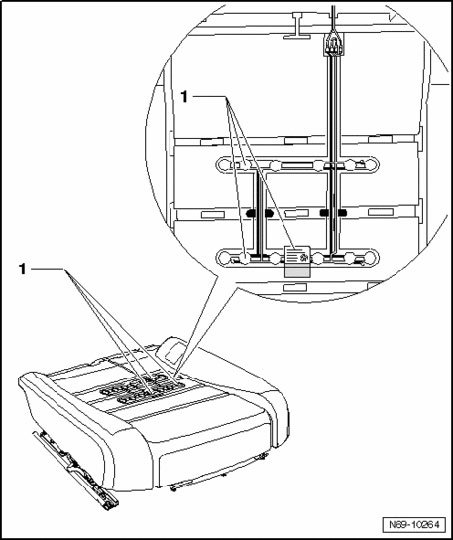
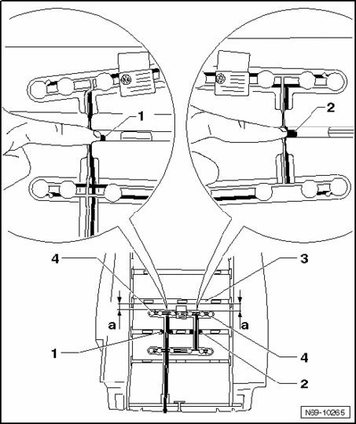
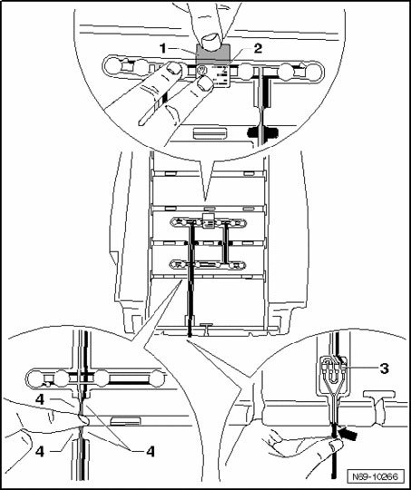

Front Passengers Seat Occupied Sensor G128, Removing and Installing
Front Passengers Seat Occupied Sensor G128, Removing And Installing
CAUTION: If Front Passengers Seat Occupied Sensor G128 is replaced, also the upholstery, front seat cushion must always be replaced!
Removing
- Remove belt anchor.
- Mount the fixture for seat repair VAS 6136 on the engine and transmission holder VAS 6095.
- Remove 12-way seat.
- Attach the seat to the fixture for seat repair VAS 6136.
- Remove 12-way seat backrest hinge trim.
- Remove 12-way seat trim.
- Remove 12-way seat backrest.
- Remove cover and upholstery from front seat cushion (12-way seat).
CAUTION: Front Passengers Seat Occupied Sensor G128 -1- is secured with seat cushion padding. It is not possible to remove and install separately, sensor must be replaced with upholstery.

Installing
- Press wiring harness in area of positioning aids -1- and -2- into upholstery channel.
- Align front sensors -4- parallel to channel -3-.
CAUTION: Ensure distance -a- of front sensors -4- to channel -3- is constant and wiring harness lies flat on upholstery.

- Secure aligned sensors -2-, remove protective foil -1- and bond sensors to upholstery.
- Press wiring harness in rear area under retainers -4-.
NOTE:
- Spread upholstery out slightly so it is easier to press the wiring harness under the retainers.
- Ensure wiring harness is routed without kinks and lies flat on the upholstery.
- Press wiring harness connecting unit -3- into designated depression in upholstery.
CAUTION: Ensure wiring harness lies flat on upholstery when doing so.
- Press wiring harness in rear area into padding opening -arrow-.

- Connect wiring harness with vehicle electrical system.

Installing of remaining components is reverse of removal.
- After installing, perform a function check with ignition on.